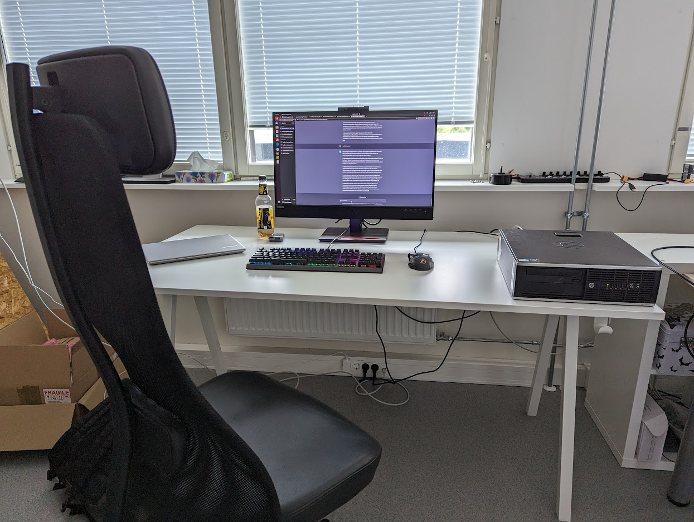

Before I could start working on a new project, I had first to do some fixing regarding errors that were made during the Nunaweb installation and setup process in the previous week.
After that I recieved several small tasks, such as fixing wrong indents which were caused by a faulty html skript generation or missing API-keys for the html subriectories which were generated on a offical server.
For the missing API-keys I did several small tests over the day, which included:
- Tested if error occurred if error was generated locally and not on the server
-> error did not occur
- Error message showed that the key should lie under docs/uavcan/uavcan but this directory was deleted after a successful generation
- Locally it worked
-> No API is beeing called into action because everything is beeing done locally

my work space
Soon we realized that fixing those small problems required an update of the Nunavut version inside of Nunaweb, which would be my next task for the week.
Monday-Tuesday, July 3th-4th
Public transport in Tallinn
Monday-Tuesday, July 3th-4th
Updating Nunaweb
Updating Nunaweb required the rewirting of some modules, espacially the _generators.py inside of Nunaweb.
The steps I took during this week go as follows:
- Fixing the version of python which is beeing used for this project (changed from newest to python 3.9)
- Corrected imports for _generators.py
- fixed the initialization of several methods and their arguments
- rewirting parts of the def _generate_dsdl method
At the end of the week I still haven't managed to get the newest version of Nunavut inside of Nunaweb running.